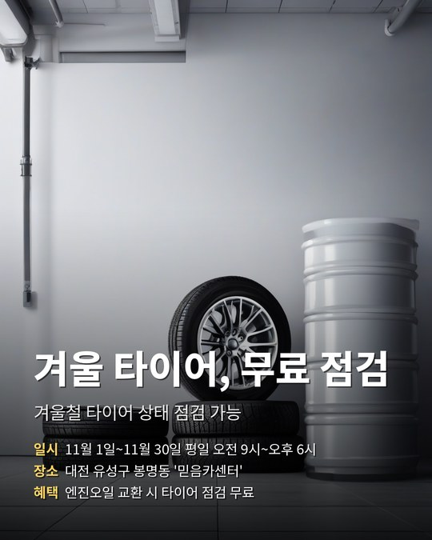
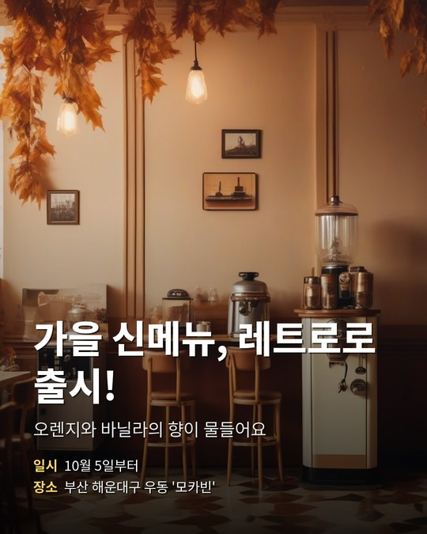

| 항목 | 내용 |
|---|---|
| 문제 | 디자인 역량과 시간이 없는 소상공인이 행사·이벤트 홍보 게시물을 직접 만들기 어렵다. |
| 대상 | 업종 제한이 없다. 업종은 프롬프트의 입력값이다. |
| 입력 | 업종, 행사명, 일시, 장소, 혜택(선택), 분위기(따뜻함·미니멀·레트로·모던) |
| 출력 | 헤드라인·서브카피·일시·장소·혜택이 얹힌 1080×1350 이미지, 캡션, 해시태그 6~8개 |
| 화면 | Streamlit. 생성, 다시 생성, 서브카피 수정, 이미지 다운로드, 캡션 복사 |
| 실행 환경 | NVIDIA GPU 1개(VRAM 8GB 이상). 모델을 내려받은 뒤에는 인터넷 없이 실행. 사전학습 모델을 추론에만 사용 |
| 설계 | 이유 |
|---|---|
| 글자는 이미지 모델이 아니라 Pillow로 얹는다. 이미지 모델에는 글자 없는 배경만 요청한다 | 이미지 모델은 날짜·가격 같은 글자를 틀리기 쉽다. 코드로 얹으면 정확하다. |
| 일시·장소·혜택은 입력값을 그대로 쓴다. 혜택은 LLM에 전달하지 않는다 | LLM이 혜택을 줄여 쓰다가 뜻을 바꾸는 사례가 있었다. 예: "엔진오일 교환 시 타이어 점검 무료"가 "엔진오일 교환 시 무료"로 바뀜. |
| LLM과 이미지 모델을 순차 실행한다 | VRAM 8GB에서 두 모델을 동시에 올릴 수 없다. 최대 사용량은 문구 단계 3.04GB, 이미지 단계 5.58GB. |
| LLM 출력을 검증하고 재시도한다 | 작은 모델은 JSON 형식과 금지 규칙을 자주 어긴다. |
| 용도 | 모델 | 선정 근거 |
|---|---|---|
| 문구 생성 | Qwen3-4B-Instruct-2507 4bit(nf4) 양자화 로드 | 상업적 사용이 가능한 라이선스(Apache-2.0)이고 한국어 문구를 생성한다. 같은 입력 3건에서 4bit는 8bit보다 약 3배 빠르고(8.0 대 1.9~2.7 tok/s) VRAM을 1.6GB 적게 쓰며(2.8GB 대 4.4GB), JSON 형식 성공률은 같았다(3/3). |
| 배경 이미지 | Stable Diffusion XL base 1.0 fp16, CPU 오프로드 | SD 1.5보다 화질이 좋다. 1장 19~26초, 최대 VRAM 5.3GB. 오프로드 없이 올리면 VRAM을 넘겨 약 11분이 걸린다. 896×1120으로 생성해 1080×1350으로 키우고, 25단계, guidance 7.0. |
양자화는 저장 정밀도를 낮추는 것이고 학습이 아닙니다. 오프로드는 모델 일부를 평소에는 CPU 메모리에 두고 필요할 때만 GPU로 옮기는 방식입니다.
| 파일 | 역할 |
|---|---|
app.py | Streamlit 화면. 폼, 생성, 다시 생성, 서브카피 수정, 다운로드, 대기번호 표시 |
src/pipeline.py | 문구 → LLM 해제 → 배경 → 글자 합성 순서 제어, 글자만 다시 얹는 recompose() |
src/text_gen.py | LLM 로드·해제, JSON 파싱, 출력 검증과 재시도 |
src/image_gen.py | SDXL 배경 생성 (오프로드) |
src/compose.py | Pillow 글자 합성. 헤드라인 3줄 이내(글자 크기 96→56 축소), 서브카피, 정보 줄. Noto Sans KR 사용 |
src/ticket_queue.py | 대기번호 큐. 요청을 순서대로 처리하고 앞사람 수와 예상 시간을 계산 |
src/prompts/templates.py | 시스템 프롬프트와 폼 → 프롬프트 변환 |
evaluation/ | 검증 케이스 12개, 문구 검증, 이미지 검증 |
| 문제 | 대응 |
|---|---|
| JSON 형식을 어김 | 시드를 바꿔 다시 생성. 총 3회까지 |
| 서브카피에 숫자(날짜·시간·지어낸 할인율) | 다시 생성 |
| 3회로 못 고친 경우 | 문제가 가장 적은 결과를 사용 (실패로 끝내지 않음) |
| 이미지 프롬프트에 "empty space for text" 누락 | 코드가 덧붙임 |
| 혜택의 의미 왜곡 | 혜택을 LLM에 전달하지 않고 코드가 원문을 이미지와 캡션에 붙임 |
12개 업종(꽃집, 카페, 정비소, 미용실, 학원, 베이커리, 헬스장, 반려동물 미용, 한식당, 네일, 서점, 세탁소)을 시드 2개씩 총 24회 생성해 점검했습니다. 혜택이 없는 경우와 일시·장소·혜택이 매우 긴 경계 사례를 포함합니다. 정답 문구나 실제 광고 이미지 세트가 없어 BLEU·FID 같은 표준 지표는 쓰지 않고, 자동 규칙 점검과 생성 결과를 직접 읽는 확인을 함께 썼습니다.
| 점검 | 결과 |
|---|---|
| JSON 형식 성공 (재시도 포함) | 24/24 |
| 헤드라인 5~22자, 캡션 40~300자, 해시태그 6~8개·형식 | 24/24 |
| 서브카피 10~40자 | 22/24 |
| 최종 캡션에 일시·장소·혜택이 입력 그대로 있음 | 24/24 |
| 이미지 프롬프트에 "no text"와 "empty space for text" 포함 | 24/24 |
| 서브카피에 숫자 없음 | 22/24 |
| 서브카피·캡션에 "분위기" 단어 없음 | 19/24 |
| 행사명 단어가 문구에 반영됨 | 22/24 |
| 문구 생성 시간 (재시도 포함) | 평균 32.1초, 최대 58.0초 |
서브카피에 숫자가 남은 2건은 입력에 있는 영업시간("8시30분")을 반복한 경우입니다. "분위기" 단어가 남은 5건은 재시도 3회로 고치지 못해 문제가 가장 적은 결과를 쓴 경우입니다.
| 점검 | 결과 |
|---|---|
| 1장 평균 시간 (모델 로드 포함) | 26.9초 (최대 31.9초) |
| 최대 VRAM | 5.58GB |
| 글자가 여백 안에 배치됨 | 12/12 |
| 글자 영역이 이미지 높이의 50% 이하 | 12/12 |
| 글자 대비 4.5 이상 (자동 지표) | 3/12 |
자동 대비 지표는 보수적이어서 육안과 차이가 있습니다. 직접 본 4장(꽃집, 정비소, 카페, 세탁소)은 모두 글자가 읽혔고 배경에 글자·로고는 없었습니다. 다만 피사체가 헤드라인 근처까지 올라와 글자 뒤에 놓이는 경우가 있고, 흰 옷이 있는 세탁소 이미지는 대비가 가장 약했습니다.


| 항목 | 내용 |
|---|---|
| 생성 시간 | 재시도가 많으면 문구 단계만 58초까지 걸린다. 이미지 단계는 별도로 약 25초. |
| 이미지 구도 | 피사체가 글자 뒤에 놓일 수 있고, 밝은 배경에서는 대비가 약하다. 글자 가독성은 하단 그림자(그라데이션)로 보완한다. |
| 문구 품질 | 소형 모델이라 어색한 한국어와 비슷한 결과의 반복이 있을 수 있다. |
| 대기번호 | 대기 중 같은 사용자가 화면을 다시 실행하면 번호를 잃는다. |
| 서비스 수준 | 로컬 프로토타입. 동시 사용자 대량 처리, 배포, 인증은 범위 밖이다. |
개선 방향: 요일·한글 숫자·길이 검증 추가, 이미지 구도 개선(피사체를 위쪽으로)과 대비 지표 보정, 캡션 수정 기능, 재시도 횟수와 시간의 균형 조정.
python -m venv .venv .venv\Scripts\activate pip install -r requirements.txt # torch 는 CUDA 빌드가 필요 hf download Qwen/Qwen3-4B-Instruct-2507 hf download stabilityai/stable-diffusion-xl-base-1.0 python -m streamlit run app.py # 브라우저에서 localhost:8501
모델은 오프라인 로드(local_files_only)이므로 처음 한 번은 위 두 모델을 내려받아야 합니다. 자세한 내용은 저장소의 README.md를 참고하세요. 화면 없이 한 번만 돌려 보려면 python scripts/run_once.py를 씁니다.
개발 환경: Windows 11, Python 3.13, torch 2.12.0+cu132, transformers 5.12.1, diffusers 0.42.0, bitsandbytes 0.50.0, accelerate 1.14.0, streamlit 1.65.0, pillow 12.2.0.
| 구성 요소 | 라이선스 |
|---|---|
| Qwen3-4B-Instruct-2507 | Apache-2.0 |
| Stable Diffusion XL base 1.0 | CreativeML Open RAIL++-M. 상업적 사용을 허용하는 것으로 읽히며 사용 제한 조항(불법 사용, 미성년자 착취, 유해한 허위정보, 의료 조언 등)이 있다. 법률 자문이 아니다. |
Noto Sans KR 폰트 (assets/fonts) | SIL Open Font License 1.1 |
| 용어 | 뜻 |
|---|---|
| 추론 | 이미 학습된 모델에 입력을 넣어 결과를 얻는 것. |
| 양자화(4bit) | 모델 숫자의 정밀도를 낮춰 용량과 VRAM을 줄이는 방법. |
| 오프로드 | 모델 일부를 평소에는 CPU 메모리에 두고 필요할 때만 GPU로 옮기는 방식. 느려지지만 VRAM에 들어간다. |
| 환각 | 모델이 입력에 없는 내용을 지어내거나 입력을 다르게 바꿔 말하는 현상. |
| 시드 | 무작위 생성의 시작값. 같은 시드와 입력이면 같은 결과가 나온다. |
| Streamlit | 파이썬 코드만으로 웹 화면을 만드는 도구. |